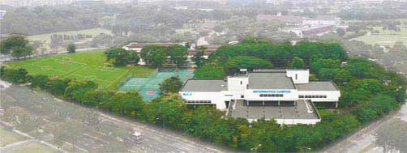

英华美教育集团创建于1983年, 集团由英华美计算机学院和泰晤士商学院组成。 是新加坡第一所教育上市公司,获得 ISO9001国际认证, 也是新加坡国家知名品牌之一。 集团拥有600多间学院, 遍布全球52个国家. 新加坡英华美学院就建立 在集团总部, 位于新加坡西部的教育与科技中心, 位置十分优越。它邻近繁华的裕廊东市镇中心, 交通方便, 附近有地铁转 换站, 新加坡科学馆, 新加坡国家图书馆裕廊分部等许多公共设施. 校园占地60万平方英尺, 有4栋教学楼, 80多间教室, 实验室, 图书馆, 餐厅, 完善的体育设施(2个足球场, 2个篮球场, 2个网球场, 2个羽毛球场) 及全范围的无线上网设备。学院可 容纳学生15000名。新加坡英华美学院每年帮助超过一万多名学生完成世界一流学府的学业, 设有预科, 大专, 高级大专, 本科, 硕士等优质教 育课程, 其中以计算机课程尤其著名; 并与国外知名大学紧密合作, 实行学分转移制. 在新加坡为学生提供一个可获得国际 权威学位和资格认证的平台。学院所有的课程均已在新加破教育部进行注册, 其文凭国际认可。学院在2003年首批获得新 加破教育素质级认证(SQC), SQC是由新加坡生产力, 标准与创新局为新加坡私立学院进行的一项质量评估认证, 获得认 证的私立学院的教育和管理品质得到新加坡政府的认可及肯定。2005年获得消协保证标志(CASETRUST), 此标志保障了在新加破留学的国际学生的利益, 也表明了新加坡政府对私立教育机构教育质量进行监督的决心, 提升了新加坡吸引国际 留学生的竞争力, 为新加坡成为亚洲的教育中心奠定了坚实的基础。
